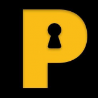
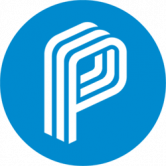
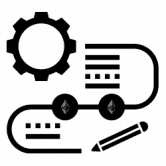
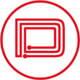
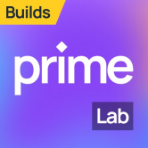

 Privapp Network 什么是 Privapp Network？ Privapp Network 由 Priva Token (PRIVA) 和通过 privapp.network 应用程序提供的所有服务组成，不会损害您的安全和隐私。PRIVA 是一种服务于多种用途的实用代币，可
 PrivatixNetwork 什么是 PrivatixNetwork隐私网络？ PrivatixNetwork是以太坊上的去中心化和 100% 自主的 P2P 网络，具有由自己的加密经济提供支
 Crypto Formulas Crypto Formulas，一个直观的构建工具包，用于以太坊上的价值转移交互。[Crypto Formulas 智能合约的第一次更新已经发布。更新智能合约的动机是新的
 DASH Token DASH 是一种与 TronDash.com 相关联的通货紧缩代币，这是一种创新实用程序，可让您在使用 Tron 区块链的最流行的 dApp 上查看您的 div 收入。TronDash 的流动性农场是从 TronDash
Decentralized Identity ICPA Digital Identity -基于通用开放标准的分散式身份解决方案。使政府能够提供为人们设计的去中心化身份。立即了解更多信息我们正在为人员、组织和设备构建一个开源
PUML Better Health 什么是 PUML Better Health？ PUML 是一个区块链健康和健身项目，它可以安全地存储和保护健身数据，同时通过我们独特的健康和健身奖励协议奖励用户。通过赞助
Oxbull Tech OxBull 是由一群才华横溢的前卫科技爱好者开发的启动板和创业孵化器，于 2021 年 2 月推出。OXB 是 OxBull 基础设施的治理令牌。OxBull 的核心不仅仅是一个代币
Package Portal Package Portal Inc 是一家总部位于美国的公司，致力于通过其用户参与平台向全世界推广加密货币。 我们的无代码服务为商家提供基于区块链的忠诚度和反馈活动的 Web3 集成
Punk Domain Punk Domains 允许您注册附加到您的帐户地址的域名。 为什么会有人需要它？好吧，你的加密地址很难记住。它以 开头0x，然后以 40 个随机字符（从 to 的数字和从to
POOZONE 什么是 POOZONE ？ PooZone 正在构建第一个基于 Web3 的个性化空间，我们才刚刚开始。 在过去的二十年里，我们一直生活在 Web 2.0 中。它不以技术转变为特征。它源于我们使用互
Post No Pixels 什么是 无像素帖子？ Post No Pixels 是一个虚拟墙，您可以在其中使用 tezos 进行绘图。每一层的价格都将翻倍，将 80% 的新收益支付给在下一层的该像素处绘图的用户。 通过
postboy.app 什么是 postboy.app ？ 为非凡的人提供问答服务。 postboy.app - 杰出人物问答服务：写信给杰出人物并获得答案或回复信件并获得以太坊 每个人都可以自动将收到的以太坊的一部分
 Primelab 什么是 Primelab ？ Near Apps 通过使 web 3 体验更容易接受并为各种企业和用户启用用例来增强 web 3 体验。 将 Web2 升级到 Web3 PrimeLab 生态系统中的 6000 万个账户，你准备好加入了吗？ 以成
Rocket Launchpad Rocket 是一个去中心化的矿池交换加速器，将早期投资者与基于 Tezos 区块链的令人兴奋的新项目联系起来 使用简化的用户界面，用户可以查看新的和即将推出的 ido 矿池
OpenDAO OpenDAO ($SOS) 是 NFT 生态系统的代币。对所有在 OpenSea 上交易过的用户进行空投。持有的国债将用于保护 OpenSea 上的交易者、支持 NFT 艺术家/社区和开发者资助。 $SOS 总额的 20% 用于质
Multitransfer Multitransfer 是一种工具，可让您一次将您的加密货币发送到数百个钱包地址。您只需上传一个 Excel/csv/txt 文件，其中包含您要发送的地址和余额，选择一个代币并在 1 分钟内发送
Podping on Hive Podping 是基于 RSS 的开放式播客生态系统的 WebSub 替代方案，允许快速、全球通知播客提要更新。使用 Hive 区块链，Podping 允许各种 Podcast 托管平台发送 Podcast 提要已更改的
ToCandy 什么是ToCandy？ ToCandy 是一个用于 tron 代币分发的 dapp。 ToCandy 每天分发糖果代币。 用户可以在收到糖果后直接参与dapp游戏或交易。 ToCandy 致力于推动 tron dapp
Token Bulksender 什么是 Token Bulksender？ 这是一个 dApp，用于通过少量交易将以太币和 ERC-20 代币批量发送到多个地址，这将为您节省更多时间和 tx 费用 Bulksender 现在生活在
Token Create BEP20 什么是 Token Create BEP20？ BEP20 代币生成器 无需编码即可创建您自己的 BEP20 智能合约。 BEP20 生成器是在币安智能链网络上创建自己的 BEP20 代币的最简单、最快捷的方式。 不
Token Create BEP20 什么是 Token Create BEP20？ 一键创建您的 bep20 令牌，无需登录 它有效地在 dapp 和 metamask 之间创建了防火墙！ NFT、DEFI用户使用可以有效防止钓鱼、诈骗等网站保护
Token ERC20 Generate 什么是 ERC20 代币生成？ 您无需登录即可一键创建您的erc20代币。您可以自定义名称、符号、总金额等 无需编码即可创建您自己的 BEP20 智能合约。 BEP20 生成器是在
TokenMaker TokenMaker 是基于智能合约在以太坊网络上创建您自己的 ERC-20 或 ERC-223 代币的最简单、最快捷的方式。 无需编程技能 获得生成代币的 100% 所有权 自定义代币名称、符号和初始供应
Tokensender 什么是代币发送者？ Tokensender 提供了为用户进行批处理的机会。 只需支付一个 交易，用户可以同时发送到150个地址。 因此，用户可以一次支付 而不是支付 150 倍的费
Tornado Cash 什么是龙卷风现金？ Tornado.cash 帮助您恢复您的隐私。 您可以使用它以隐藏您的发送地址的方式将 Ether 发送到任何地址。 它使用零知识证明来做到这一点。 您可以使用此应
Trace Network Labs 什么是 Trace Network Labs？ Trace Network Labs 正在由 NFT 和数字时尚提供支持的 Metaverses 中为他们提供真实的元双胞胎（数字化身）和生活方式。 Trace Network Lab 的愿景是成为生活方式品牌的事
Tracy Boost My Project 什么是 Tracy Boost 我的项目？ TraceCoin Token Crowdfunding 是一个分散的众筹平台，它结合了区块链技术以实现安全性和问责制。 支持者有一种去中心化的托管方法来保护他们的资金。 与最
Waitabit Waitabit 是第一个基于堆栈连接和 gaia 存储的去中心化系统。它可以帮助初创公司启动他们的早期测试程序，并帮助安全地收集/存储用户信息。 Waitabit 让您能够使用简单的


 是 NFT 生态系统的代币。对所有在 OpenSea 上交易过的用户进行空投。持有的国债将用于保护 OpenSea 上的交易者、支持 NFT 艺术家/社区和开发者资助。")